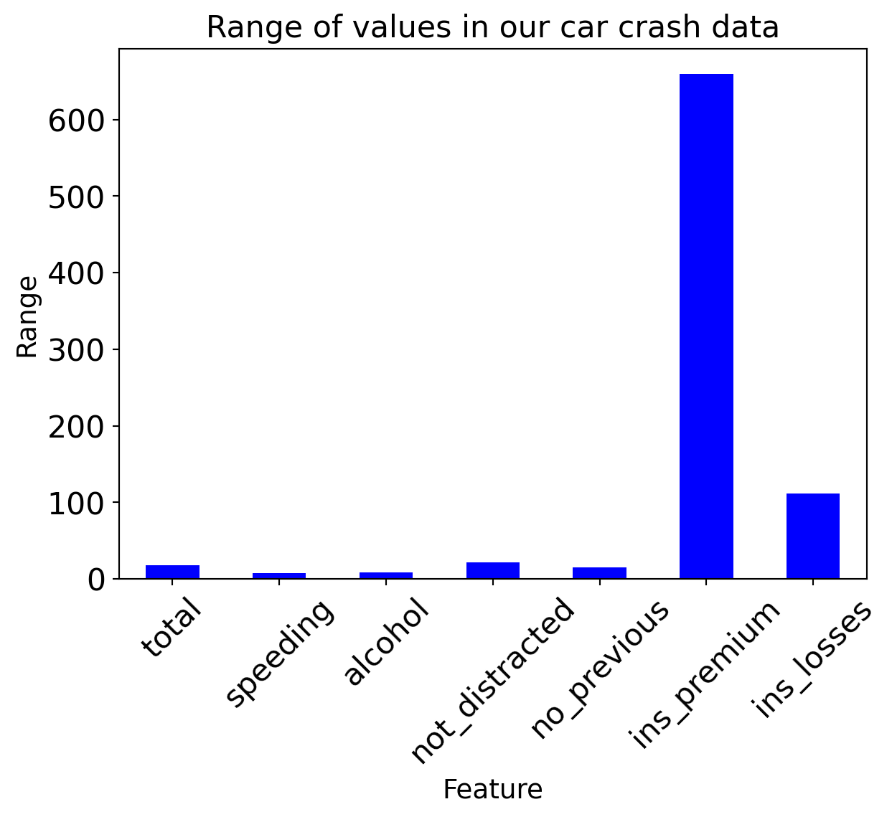
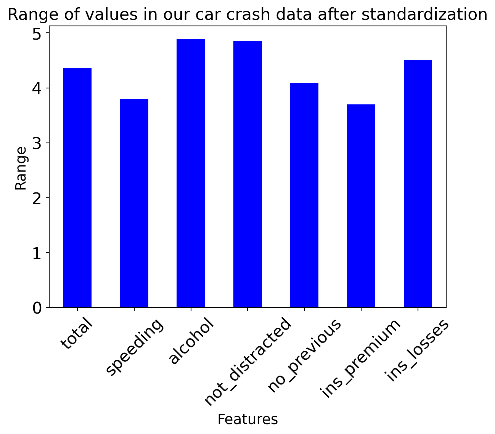
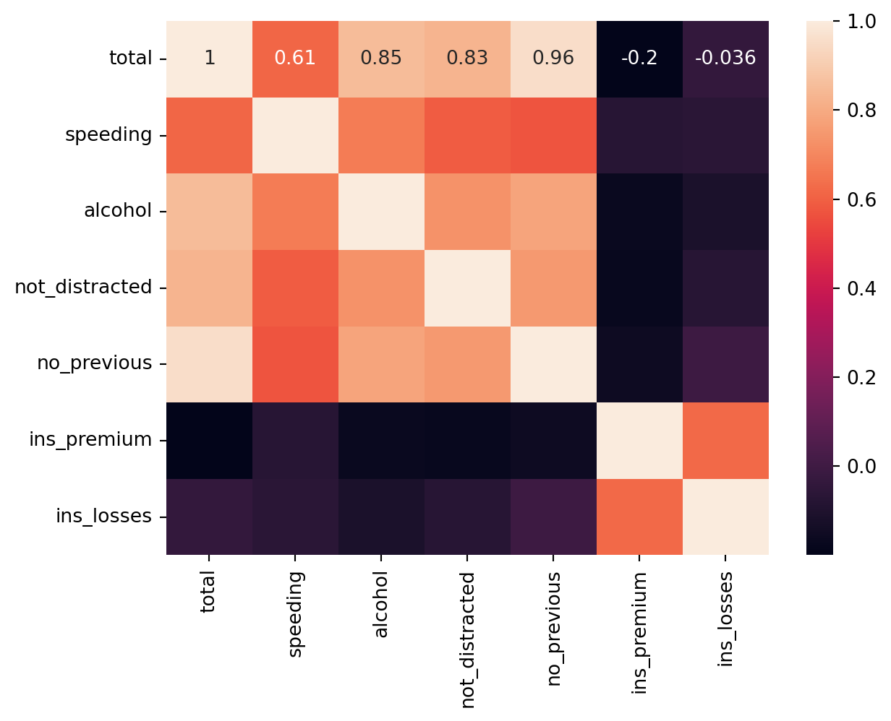

import numpy as np
import seaborn as sns
import pandas as pdPrincipal Component Analysis
Probability theory
PCA
What’s PCA, and how to calculate it
Banner Image Credit: Jernej Furman
Introduction
Principal component analysis (PCA) is a widely used statistical method for examining extensive datasets characterized by numerous dimensions or features per observation. PCA is a relatively well-established theory with its roots dating back to the beginning of the 1900s. Its primary aim is to enhance data interpretability while conserving the maximum information possible, thereby enabling the visualization of multidimensional data. Essentially, PCA serves as a statistical approach to diminish dataset dimensionality. This is achieved by transforming the data through linear methods into a fresh coordinate system where a reduced number of dimensions can effectively encapsulate (most of) the data variation compared to the original dataset.
In various studies, researchers often employ the initial two principal components to plot data in a two-dimensional space, facilitating the identification of clusters among closely associated data points. The applications of principal component analysis span across diverse fields including population genetics, microbiome studies, and atmospheric science. As Machine Learning(ML) is a data-driven approach to building algorithms, PCA plays an important role in ML for Dimensionality Reduction, Data Preprocessing, Visualization, Decorrelation and Feature Extraction, Speeding Up Learning Algorithms, and Noise Filtering.
The idea behind PCA is, that given a dataset with some statistical distribution (i.e., not deterministic), we would like to find features that can best describe as much of the data as possible. By doing so we will be able to explain the data with fewer sets of features than the actual data has. In data involving numerous variables and dimensions, not all variables hold equal importance. Some variables are key while others are less critical. The Principal Component Analysis (PCA) method offers a systematic way to identify and eliminate less significant variables. By transforming the original variables into uncorrelated principal components, PCA retains essential information while discarding less important variables. This process simplifies complex datasets by focusing on the principal components that capture the majority of the dataset’s variance. Consequently, PCA enhances data transparency by emphasizing the critical factors while reducing unnecessary complexity.
In this blog, we will go through the steps for calculating PCA with an example data set demonstrating PCA in action to perform dimensionality reduction.
What Exactly is Principal Component
The principal component represents a novel feature or feature formed by combining the original features linearly. By crafting one or more of these new features, the objective is to ensure that these combinations result in uncorrelated variables, known as principal components. This process involves condensing or compressing most of the information from the initial variables into the first component. In essence, when dealing with n-dimensional data, PCA generates n principal components. However, the primary goal of PCA is to maximize information encapsulation in the initial component, followed by retaining the maximum remaining information in subsequent components. This systematic approach prioritizes the encapsulation of significant data details within these newly constructed components in a step-by-step manner.
Arranging information within principal components enables effective dimensionality reduction without significant loss of information. This process involves discarding components that hold minimal information while regarding the remaining components as the new variables. By prioritizing the retention of informative components and disregarding those with lower significance, one can streamline the dataset and create a new set of variables that effectively captures the essential information from the original dataset. This approach facilitates a more concise representation of the data while preserving the most critical information contained within the retained components. While representing data with less number of features reduces the complexity of the data aiding in different aspects of machine learning it complicates understanding of the data as the newly formed features (i.e., principal components) do not have a one-to-one mapping with the original feature set. ## Data The data we will use in this post comes with seaborn plotting package. Specifically, we’ll use the car_crashes dataset from seaborn package. If you’re new to seaborn, I’ve another post that demonstrates different plot types available in seaborn.
The car_crashes dataset is data about car accidents, their cause, and cost to insurance companies in the states of the USA. It consists of the following features.
- total: Number of drivers involved in fatal collisions per billion miles (5.900–23.900)
- speeding: Percentage Of Drivers Involved In Fatal Collisions Who Were Speeding (1.792–9.450)
- alcohol: Percentage Of Drivers Involved In Fatal Collisions Who Were Alcohol-Impaired (1.593–10.038)
- not_distracted: Percentage Of Drivers Involved In Fatal Collisions Who Were Not Distracted (1.760–23.661)
- no_previous: Percentage Of Drivers Involved In Fatal Collisions Who Had Not Been Involved In Any Previous Accidents (5.900–21.280)
- ins_premium: Car Insurance Premiums (641.960–1301.520)
- ins_losses: Losses incurred by insurance companies for collisions per insured driver (82.75–194.780)
- abbrev: A two-letter abbreviation of US state name the data stands for
Import the required packages
Let’s start by importing the necessary packages
Load the data
We can now load the data and try to understand it
car_crashes = sns.load_dataset("car_crashes")
car_crashes.head()| total | speeding | alcohol | not_distracted | no_previous | ins_premium | ins_losses | abbrev | |
|---|---|---|---|---|---|---|---|---|
| 0 | 18.8 | 7.332 | 5.640 | 18.048 | 15.040 | 784.55 | 145.08 | AL |
| 1 | 18.1 | 7.421 | 4.525 | 16.290 | 17.014 | 1053.48 | 133.93 | AK |
| 2 | 18.6 | 6.510 | 5.208 | 15.624 | 17.856 | 899.47 | 110.35 | AZ |
| 3 | 22.4 | 4.032 | 5.824 | 21.056 | 21.280 | 827.34 | 142.39 | AR |
| 4 | 12.0 | 4.200 | 3.360 | 10.920 | 10.680 | 878.41 | 165.63 | CA |
We can see all features except the abbreviation (which represents the US state the sample stands for) are continuous-valued.
car_crashes.info()<class 'pandas.core.frame.DataFrame'>
RangeIndex: 51 entries, 0 to 50
Data columns (total 8 columns):
# Column Non-Null Count Dtype
--- ------ -------------- -----
0 total 51 non-null float64
1 speeding 51 non-null float64
2 alcohol 51 non-null float64
3 not_distracted 51 non-null float64
4 no_previous 51 non-null float64
5 ins_premium 51 non-null float64
6 ins_losses 51 non-null float64
7 abbrev 51 non-null object
dtypes: float64(7), object(1)
memory usage: 3.3+ KBWe’ll remove the apprev column as it is not relevant to our demonstration in this post
car_crashes = car_crashes.drop('abbrev', axis=1)Maximum, Minimum, Standard deviation and Average Values
The maximum value in each of the columns
car_crashes.max()total 23.900
speeding 9.450
alcohol 10.038
not_distracted 23.661
no_previous 21.280
ins_premium 1301.520
ins_losses 194.780
dtype: float64The minimum value in each of the columns
car_crashes.min()total 5.900
speeding 1.792
alcohol 1.593
not_distracted 1.760
no_previous 5.900
ins_premium 641.960
ins_losses 82.750
dtype: float64The range in each column is the difference between the max and minimum values
car_crashes_range = car_crashes.max() - car_crashes.min()
car_crashes_rangetotal 18.000
speeding 7.658
alcohol 8.445
not_distracted 21.901
no_previous 15.380
ins_premium 659.560
ins_losses 112.030
dtype: float64We can visualize the difference in the range
p1 = car_crashes_range.plot(
legend=False,
kind="bar",
rot=45,
color="blue",
fontsize=16,
)
p1.set_title("Range of values in our car crash data", fontsize=16)
p1.set_xlabel("Feature", fontsize=14)
p1.set_ylabel("Range", fontsize=14)Text(0, 0.5, 'Range')
We can get the mean value and standard deviation of each column as well
car_crashes.mean(axis=0)total 15.790196
speeding 4.998196
alcohol 4.886784
not_distracted 13.573176
no_previous 14.004882
ins_premium 886.957647
ins_losses 134.493137
dtype: float64car_crashes.std(axis=0)total 4.122002
speeding 2.017747
alcohol 1.729133
not_distracted 4.508977
no_previous 3.764672
ins_premium 178.296285
ins_losses 24.835922
dtype: float64Computing PCA
Calculating PCA involves five steps. These are
- Standardization
- Covariance Matrix Computation
- Eigenvectors and Eigenvalues
- Feature Vector
- Recast the Data
Now that we’ve explained the data we’ll use for demonstrating PCA and the steps involved, let’s go through each step with the aforementioned data and see PCA in action.
PCA in Action
Step 1. Standardization
PCA is sensitive to variance, meaning if features different range in values the PCA calculation will be dominated by features with a larger range. In our dataset, we have features that represent a percentage value (hence the potential values range from 0 to 100, but the actual maximum value in the dataset is way below 100). We also have other features that have a more inconsistent range. For example, the ins_premium has a range of 659.560 while speading has a range of 7.658. As a result, the PCA analysis will be greatly (and incorrectly) influenced by a change in ins_premium value.
To address this issue, we perform standardization before PCA, that is we bring values of all features to a standard range. The one common way to standardize any data is the following formula.
\[ z = \frac{v - \mu}{\sigma} \] Where \(z\) is the standardized value, \(v\) is the original value, \(\mu\) stands for mean and \(\sigma\) is the standard deviation
We can perform this calculation in python as follows
car_crashes_std = (car_crashes - car_crashes.mean(axis=0)) / car_crashes.std(axis=0)
car_crashes_std.head()| total | speeding | alcohol | not_distracted | no_previous | ins_premium | ins_losses | |
|---|---|---|---|---|---|---|---|
| 0 | 0.730180 | 1.156638 | 0.435603 | 0.992425 | 0.274956 | -0.574368 | 0.426272 |
| 1 | 0.560360 | 1.200747 | -0.209229 | 0.602537 | 0.799304 | 0.933964 | -0.022674 |
| 2 | 0.681660 | 0.749253 | 0.185767 | 0.454831 | 1.022962 | 0.070177 | -0.972106 |
| 3 | 1.603542 | -0.478849 | 0.542015 | 1.659539 | 1.932471 | -0.334374 | 0.317961 |
| 4 | -0.919504 | -0.395588 | -0.882977 | -0.588421 | -0.883180 | -0.047941 | 1.253703 |
Let’s perform a similar visualization on the range as we did earlier
p2 = (car_crashes_std.max() - car_crashes_std.min()).plot(
legend=False, kind="bar", rot=45, color="blue", fontsize=16
)
p2.set_title("Range of values in our car crash data after standardization", fontsize=16)
p2.set_xlabel("Features", fontsize=14)
p2.set_ylabel("Range", fontsize=14)Text(0, 0.5, 'Range')
We can see that now the range is more consistent across the features
Step 2. Covariance Matrix
Covariance Matrix To get a sense of how the values of the input dataset vary from the mean to each other we compute the covariance matrix. The covariance matrix is a \(m × m\) symmetric matrix (where m is the number of features, we’ve in our input dataset). Features might be highly correlated and through computing the covariance matrix we can identify this relationship.
For example, a covariance matrix of an input dataset with 4 features \((f_1,f_2,f_3,f_4)\) will be a 4x4 matrix of the following form
\[ Covariance Matrix = \begin{bmatrix} cov(f_1,f_1) & cov(f_1,f_2) & cov(f_1,f_3) & cov(f_1,f_4) \\ cov(f_2,f_1) & cov(f_2,f_2) & cov(f_2,f_3) & cov(f_2,f_4) \\ cov(f_3,f_1) & cov(f_3,f_2) & cov(f_3,f_3) & cov(f_3,f_4) \\ cov(f_4,f_1) & cov(f_4,f_2) & cov(f_3,f_3) & cov(f_4,f_4) \end{bmatrix} \]
We compute the covariance between to features \(f_x\) and \(f_y\) as follows \[ cov(f_x,f_y) = \dfrac{\sum(x_i-\mu_x) (y_i-\mu_y)}{n} \] Where \(x_i\) and \(y_i\) are the \(i^{th}\) values for feature \(x\) and \(y\) and \(n\) is the total number of data points.
With this equation notice how
- covariance of a feature f with itself (i.e., \(Cov(f_x,f_x)\)) the variance of the feature (i.e., \(Var(f_x)\))
- covariance is symmetric, i.e., \(Cov(fx,fy) = Cov(f_y,f_x)\)
Now that we know that the covariance matrix is not more than a table that summarizes the correlations between all the possible pairs of variables, let’s move to the next step. While we can use these equations to calculate the covariance matrix pandas provide a built-in method for calculating it in one go.
cov_mat = car_crashes_std.cov()We can visualize this matrix using seaborn’s heatmap
sns.heatmap(cov_mat, annot=True)<Axes: >
Step 3. Eigenvectors and Eigenvalues
Eigenvectors and eigenvalues, fundamental concepts from linear algebra, play a crucial role in computing the principal components of a dataset from its covariance matrix. In an n-dimensional dataset comprising n features, there exist n eigenvectors accompanied by n corresponding eigenvalues.
Eigenvectors derived from the Covariance matrix represent the axes’ directions where the highest variance or most information is concentrated. These eigenvectors are termed Principal Components. Eigenvalues, on the other hand, serve as coefficients associated with eigenvectors, signifying the quantity of variance encapsulated within each Principal Component. Essentially, eigenvalues provide a measure of the amount of variance carried by the respective eigenvectors, highlighting their significance in determining the variance distribution across the dataset’s principal axes.
Arranging your eigenvectors based on their corresponding eigenvalues, from highest to lowest, provides the principal components in descending order of significance. This ranking scheme ensures that the principal components are prioritized based on the amount of variance or information they encapsulate. The eigenvector associated with the highest eigenvalue represents the most significant principal component, followed by subsequent components in decreasing order of importance, allowing for a systematic determination of the most influential axes within the dataset.
We can use numpy’s linalg.eigh( ) method to calcuate eigenvectors and eigenvalues a matrix.
eigen_values, eigen_vectors = np.linalg.eigh(cov_mat)eigen_valuesarray([0.02747434, 0.19865996, 0.28077 , 0.350529 , 0.55060199,
1.57801295, 4.01395176])eigen_vectorsarray([[ 0.80082487, -0.16970508, -0.14597659, -0.0389558 , 0.26908802,
-0.06893769, -0.47947078],
[ 0.01784783, -0.22479246, 0.02282818, 0.36374887, -0.81826935,
-0.0765846 , -0.37534719],
[-0.15285774, 0.7837677 , -0.35479821, -0.14834351, -0.08293253,
-0.03345835, -0.45437635],
[-0.14247844, 0.08510479, 0.85646854, -0.1712655 , 0.12616845,
-0.04237473, -0.4380328 ],
[-0.55875371, -0.50401185, -0.33611019, -0.03948141, 0.31798812,
-0.0961294 , -0.45703414],
[ 0.04126619, -0.11577348, -0.04214531, -0.65639617, -0.25614247,
-0.6852266 , 0.1308319 ],
[-0.02804966, 0.17805184, 0.06327152, 0.61839859, 0.26173503,
-0.71252436, 0.06996048]])We should now sort the Eigenvalues in the descending order along with their corresponding Eigenvector.
# sort the eigenvalues in descending order
sorted_index = np.argsort(eigen_values)[::-1]
sorted_eigenvalue = eigen_values[sorted_index]
# Similarly sort the eigenvectors
sorted_eigenvectors = eigen_vectors[:, sorted_index]Step 4. Feature Vector
Once sorted, we can select the subset of the Eigenvalue as per our requirement. In this case, since we are interested in the two principal components, we take the first two values (i.e. n_components = 2). This forms our feature vector which is a matrix that has as columns the eigenvectors of the components that we decide to keep. By only keeping a subset of the Eigenvectors we are reducing the number of features hence the notion of dimensionality reduction.
n_components = 2
feature_vector = sorted_eigenvectors[:,0:n_components]
feature_vectorarray([[-0.47947078, -0.06893769],
[-0.37534719, -0.0765846 ],
[-0.45437635, -0.03345835],
[-0.4380328 , -0.04237473],
[-0.45703414, -0.0961294 ],
[ 0.1308319 , -0.6852266 ],
[ 0.06996048, -0.71252436]])Step 5. Recast the Data
car_crash_reduced = -np.dot(
feature_vector.transpose(), car_crashes_std.transpose()
).transpose()
cars_pca = pd.DataFrame(data=car_crash_reduced, columns=["PC 1", "PC 2"])
cars_pca.head()| PC 1 | PC 2 | |
|---|---|---|
| 0 | 1.587871 | 0.132134 |
| 1 | 1.132939 | 0.849778 |
| 2 | 1.418062 | -0.416363 |
| 3 | 2.467035 | 0.345530 |
| 4 | -1.733390 | 0.627382 |
Using scikit-learn package
The scikit-learn package comes with an API to calculate PCA without having to follow the above steps
from sklearn.decomposition import PCA
pca = PCA(n_components=2)
pcs = pca.fit_transform(car_crashes_std)
principal_cars = pd.DataFrame(data=pcs, columns=["PC 1", "PC 2"])
principal_cars.head()| PC 1 | PC 2 | |
|---|---|---|
| 0 | 1.587871 | 0.132134 |
| 1 | 1.132939 | 0.849778 |
| 2 | 1.418062 | -0.416363 |
| 3 | 2.467035 | 0.345530 |
| 4 | -1.733390 | 0.627382 |
One advantage of the scikit-learn implementation of PCA is that it implements Probabilistic Principal Component Analysis 1. This enables us obtain the log maximum-likelihood of each sample. Maximum likelihood refers to the point (in mean or standard deviation) the distribution we’ve is going to represent most of the data we are trying to model.
pca.score_samples(car_crashes_std)array([ -6.44954331, -7.53883983, -6.40958592, -11.35786508,
-6.61054168, -5.03977718, -7.12053256, -5.96378314,
-10.50232239, -8.20041332, -6.42991259, -10.97177485,
-7.06959704, -4.9868997 , -5.54486928, -7.78448959,
-5.31230145, -7.44998984, -9.88242453, -6.02864696,
-8.31301121, -6.69510241, -6.02183068, -6.18648717,
-20.56341095, -6.28341612, -12.20777983, -8.11910771,
-4.96080412, -5.43102784, -8.87161592, -8.04646994,
-7.11756172, -5.79150497, -12.14066975, -6.12536757,
-8.30172833, -5.96072048, -8.82359145, -6.85850641,
-9.58963574, -6.04225252, -7.74060643, -6.44307295,
-7.73434658, -5.14398609, -7.48886884, -6.43042227,
-7.67794805, -9.04404655, -5.75015305])These values represent how much of the data (likelihood) our PCA components are covering. To get an average value we can use a different method from PCA as follows
pca.score(car_crashes_std)-7.61880713471763The log-likelihood value for a given model can range from negative infinity to positive infinity. The actual log-likelihood value for a given model is mostly meaningless, but it’s useful for comparing two or more models. We can compare our previous PCA model with one that has 3, 4, 5 components
pca3 = PCA(n_components=3)
pcs3 = pca3.fit_transform(car_crashes_std)
pca3.score(car_crashes_std)-7.408329581463735pca4 = PCA(n_components=4)
pcs4 = pca4.fit_transform(car_crashes_std)
pca4.score(car_crashes_std)-7.297318147783873pca5 = PCA(n_components=5)
pcs5 = pca5.fit_transform(car_crashes_std)
pca5.score(car_crashes_std)-7.149503033441305While there is an improvement in the actual score we are increasing the number of components. Since our objective is to reduce the number of dimensions (features) and adding more components works against that aim, the improvements gained in log-likelihood score are not worth the additional dimensions we are introducing.
Footnotes
“Mixtures of Probabilistic Principal Component Analysers” - Michael E. Tipping and Christopher M. Bishop http://www.miketipping.com/papers/met-mppca.pdf↩︎